Google vient de sortir Gemini 3 et le design de l'interface utilisateur est tout simplement époustouflant. Voici quelques exemples de designs que j'ai réalisés en un seul prompt. Dans cette vidéo, je vais vous montrer comment vous pouvez l'utiliser gratuitement et comment tirer le meilleur parti de ce nouveau modèle de Google, car l'ère des applications qui ont l'air d'être faites par IA est révolue, puisque Gemini 3 conçoit désormais comme un professionnel.
Interface & Outils : Navigateur web, interface Google AI Studio et site web au design épuré (LUUME).
Contenu textuel & Code : Exemples d'interfaces utilisateur générées par IA, design web moderne avec typographie audacieuse, et interface de développement de prompts.
Action / Démonstration : Présentation d'exemples de designs générés par intelligence artificielle et démonstration d'outils de développement.
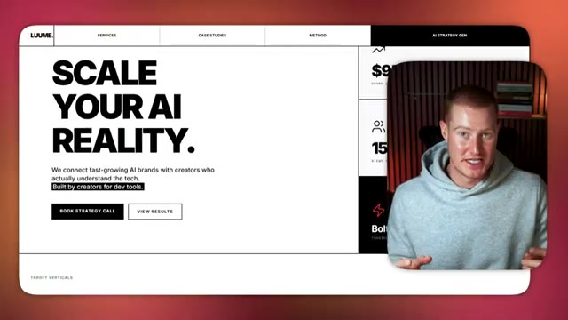
🔍 AgrandirAlors allons-y. Très bien, voici donc la conception d'une page de destination que j'ai créée en une seule invite en utilisant le nouveau Gemini 3. Et si vous avez déjà fait du codage intuitif, c'est une amélioration majeure par rapport à ce que nous aurions obtenu auparavant. Cela a l'air extrêmement bien. Vous savez, c'est très propre et cela ne fait pas générique ou généré par l'IA. Donc si je viens sur Lovable, voici un exemple de ce à quoi nos interfaces utilisateur auraient ressemblé si nous avions utilisé quelque chose comme Claude, ChatGPT, ou même Gemini 2.5, le dernier modèle d'IA de Google.
Interface & Outils : Navigateur web affichant une application de développement / génération de pages web (Google AI Studio).
Contenu textuel & Code : Page de destination conçue par IA pour une marque fictive ("Luume - AI Influencer Marketing") avec du texte, des boutons et des visuels.
Action / Démonstration : Présentation et démonstration de la page de destination générée en une seule invite.
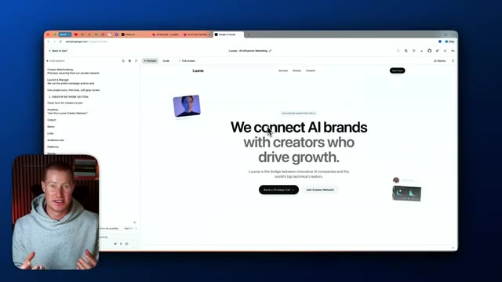
🔍 AgrandirÇa a l'air extrêmement basique. C'est un seul prompt et c'est ce que ça m'a donné. Ça a l'air absolument naze. Donc c'est ce qu'on est capable de construire maintenant. Et laissez-moi vous montrer un autre exemple maintenant qui a été créé avec Gemini 3 en littéralement un seul prompt. Donc voici un autre exemple, dans un style assez similaire. Et encore une fois, ça a été créé en un seul prompt. Laissez-moi vous montrer un autre exemple avec un style différent.
Interface & Outils : Navigateur web, Google AI Studio, interface de développement / prévisualisation de site web.
Contenu textuel & Code : Interface web générée par IA avec le titre "We connect AI brands with creators who drive growth", menu de navigation et section de services.
Action / Démonstration : Navigation et démonstration du site web généré par l'intelligence artificielle à l'aide d'un prompt unique.
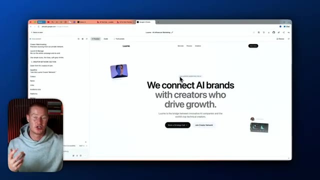
🔍 Agrandir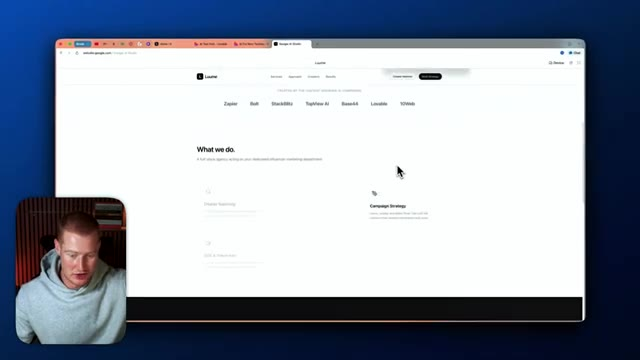
🔍 AgrandirDonc j'ai essentiellement donné à Gemini 3 cette consigne ici, construis-moi un site web de style suisse haut de gamme. Et c'est une consigne assez complexe, qui explique fondamentalement exactement comment je veux que ça rende. J'utilise ChatGPT pour m'aider à trouver un style de design. Je voulais juste un site web de style suisse et il s'est étendu et m'a donné cette consigne à lui fournir. Mais les gars, regardez à quel point ce site a l'air épuré juste ici.
Interface & Outils : Google AI Studio / Navigateur web (Google Chrome)
Contenu textuel & Code : Prompt textuel pour la création d'un site web de style suisse haut de gamme, code de génération d'interface et prévisualisation du site « Luume ».
Action / Démonstration : Le présentateur montre l'écran de prévisualisation d'un site web généré par IA et met en avant le prompt détaillé utilisé dans Google AI Studio.
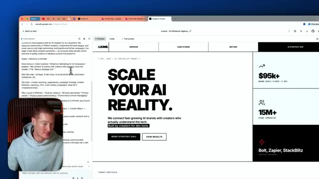
🔍 Agrandir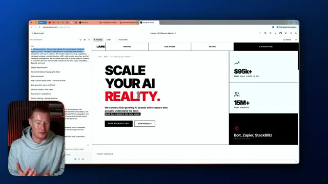
🔍 AgrandirCela ne ressemble pas, à mon avis, du tout à du contenu généré par l'IA. Et laissez-moi vous montrer dès maintenant comment vous pouvez commencer à faire cela vous-même gratuitement. Très bien, alors tout d'abord, vous allez chercher Google AI Studio. Et lorsque vous êtes à l'intérieur de Google AI Studio, vous allez cliquer sur cette fonctionnalité de création juste ici. Et ensuite, vous pouvez voir que nous avons maintenant accès à Gemini 1.5 Pro Preview. C'est le modèle que nous allons utiliser pour faire du « vibe coding ».
Interface & Outils : Google AI Studio et interface de prévisualisation web de type navigateur.
Contenu textuel & Code : Interface utilisateur de Google AI Studio, champ de saisie de prompt (« Describe your idea »), modèle Gemini 1.5 Pro-Preview.
Action / Démonstration : Navigation et présentation de l'interface Google AI Studio pour créer des applications ou des sites web par IA.
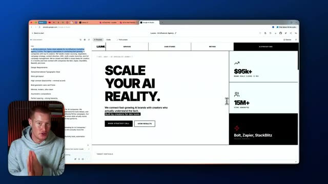
🔍 Agrandir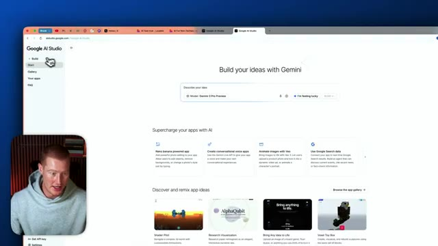
🔍 AgrandirPar exemple, je pourrais simplement cliquer là-dessus, dire que je me sens chanceux et lui demander de me construire un site web. Allons-y donc et regardons-le faire son travail. Très bien. C'est donc le résultat qu'il nous a donné. Et une chose que je tiens à mentionner ici, c'est que cela a l'air plutôt générique pour de l'IA. Ça a l'air généré par IA. Et la raison à cela est que je n'ai pas utilisé un bon prompt.
Interface & Outils : Navigateur web, Google AI Studio
Contenu textuel & Code : Interface de création d'application web, arborescence de fichiers générés, options de prévisualisation et de code, zone de téléchargement de logo.
Action / Démonstration : Présentation du résultat généré par l'intelligence artificielle pour la création d'un site web de mockups de produits.
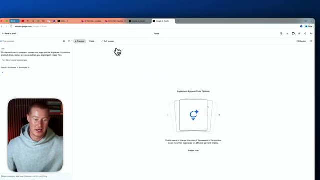
🔍 Agrandir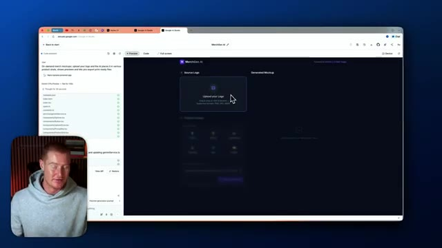
🔍 AgrandirJ'ai utilisé un prompt très basique. Laissez-moi vous montrer exactement quel était ce prompt. Vous pouvez voir que c'est une seule phrase et je n'ai presque aucune instruction ici, surtout en ce qui concerne le style de la façon dont je veux que notre application soit générée. Donc ce que je vais faire, c'est en fait améliorer ce prompt. Je vais utiliser un GPT personnalisé que j'ai créé dans ChatGPT pour fondamentalement rendre l'instruction beaucoup plus approfondie. Très bien, je vais revenir sur Google AI Studio et simplement cliquer sur "build". C'est le prompt que j'ai obtenu de ChatGPT. Celui-ci, vous pouvez voir qu'il est super spécifique sur exactement à quoi nous voulons qu'il ressemble. Nous avons des styles de composants, nous avons des coins arrondis sur nos boutons, tous ces éléments différents.
Interface & Outils : Navigateur web, interface de développement/génération d'applications (type outil de prototypage IA).
Contenu textuel & Code : Panneau de gauche avec un prompt et des exigences de design (style macOS/iOS, palette de couleurs neutres, typographie San Francisco, mode sombre).
Action / Démonstration : Le présentateur montre l'interface et les instructions textuelles utilisées pour générer l'application.
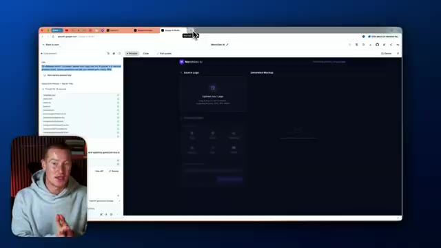
🔍 Agrandir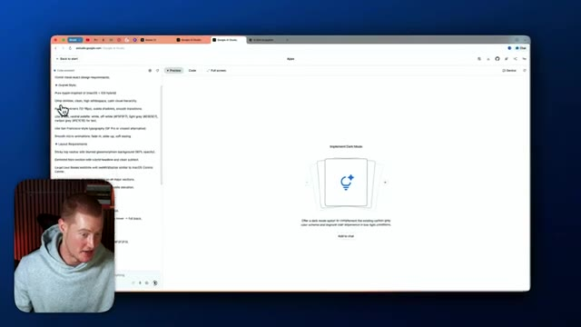
🔍 Agrandirchoses. Donc, comparons et contrastons nos résultats ici. Et encore une fois, c'est totalement gratuit d'utilisation en utilisant Google AI Studio en ce moment. Et la raison pour cela, mais il y a une mise en garde. Donc, si nous décidons d'ajouter des fonctionnalités d'IA à notre application, comme soit la génération de texte avec Gemini, soit la génération d'images ou de vidéos, nous devrons payer par génération lorsque nous utiliserons réellement notre application en production.
Interface & Outils : Navigateur web, Google AI Studio et interface d'application web.
Contenu textuel & Code : Instructions textuelles de conception, code d'interface, et aperçu de page web avec des blocs de statistiques ($95k+, 15M+).
Action / Démonstration : Navigation et présentation d'une application générée ou configurée via l'IA.
Mais si nous ne faisons rien de tel, et que par exemple, nous construisons simplement une page de destination comme celle-ci, alors nous n'avons rien à payer. C'est donc un excellent moyen pour vous de commencer à tester ce nouveau modèle pour voir les capacités avant de l'utiliser à l'intérieur de quelque chose comme Lovable ou Bolt ou l'une de vos plateformes de *vibe coding* préférées. Et aussi en ce moment, Google AI Studio n'a pas de fonctionnalités de backend intégrées.
Interface & Outils : Navigateur web affichant une application web de prévisualisation de page de destination (Google AI Studio ou outil similaire).
Contenu textuel & Code : Page web avec les textes "SCALE YOUR AI REALITY", des métriques comme "$95k+" et "15M+", et des exigences de design textuelles sur le panneau de gauche.
Action / Démonstration : Le présentateur commente l'aperçu de la page de destination générée et explique comment la tester gratuitement.
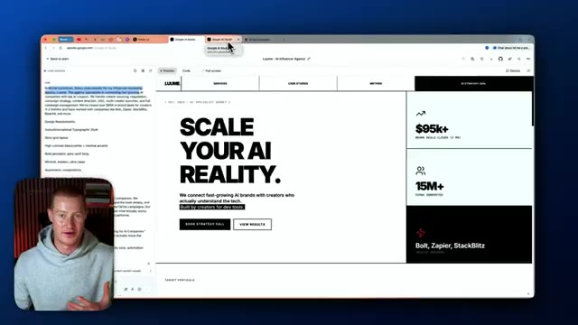
🔍 Agrandir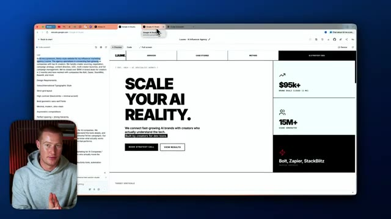
🔍 AgrandirDonc on pouvait seulement faire l'interface front-end de notre application. Très bien. Donc on vient juste de construire cette application. Je crois qu'elle vous permet de générer des produits dérivés à partir du simple téléchargement de votre logo. Donc laissez-moi aller l'essayer maintenant. Je vais ajouter un logo Apple. Et puis comme vous pouvez le voir, nous avons ces différents produits ici. Donc laissez-moi prendre ce sac cabas en toile. Et on dirait qu'on peut en gros modifier ça comme ça avec ce curseur de glisser-déposer ici, ou on peut juste générer la maquette réaliste.
Interface & Outils : Navigateur web affichant l'interface de développement Google AI Studio / application web MerchMocker AI.
Contenu textuel & Code : Interface utilisateur front-end avec des composants de prévisualisation de produits, grille de galerie et curseurs de configuration de position.
Action / Démonstration : Navigation et démonstration interactive des fonctionnalités de l'application de création de produits dérivés par IA.
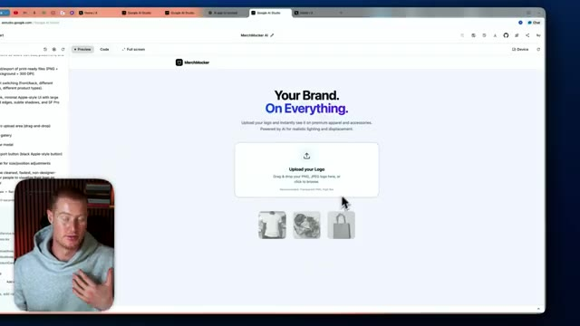
🔍 Agrandir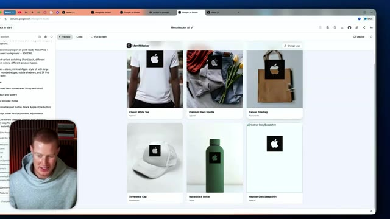
🔍 Agrandir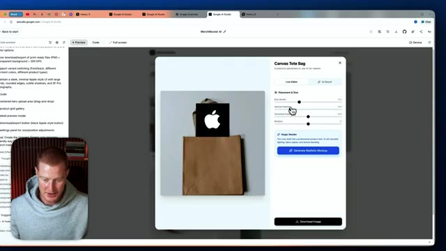
🔍 AgrandirDonc laissez-moi juste cliquer là-dessus et cela devrait maintenant ajouter notre logo à n'importe quel produit que nous avons ici et honnêtement l'interface utilisateur de ceci a l'air plutôt solide C'est un seul prompt donc nous pourrions devenir beaucoup plus complexes avec ça et voilà Ça a l'air vraiment solide Nous pourrions même télécharger l'image ici boum et juste comme ça nous avons une application de génération de produits dérivés à partir du simple téléchargement d'un logo Donc c'est un cas d'usage sympa que j'ai construit encore une fois, juste avec un seul prompt Très bien Alors encore une fois en un seul prompt j'ai créé ceci c'est un générateur de système de design Donc essentiellement il prend n'importe quel logo et crée ensuite un guide de marque de style suisse pour cette entreprise juste en se basant sur le logo
Interface & Outils : Navigateur web affichant une application de création de mockups de produits et de génération de kits de marque.
Contenu textuel & Code : Interface utilisateur avec paramètres de personnalisation, panneaux de configuration, code et prévisualisations de produits de merchandising.
Action / Démonstration : Démonstration de l'ajout d'un logo sur des produits et présentation d'une application de génération de charte graphique.
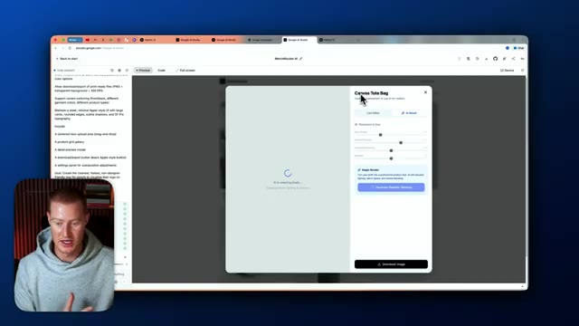
🔍 Agrandir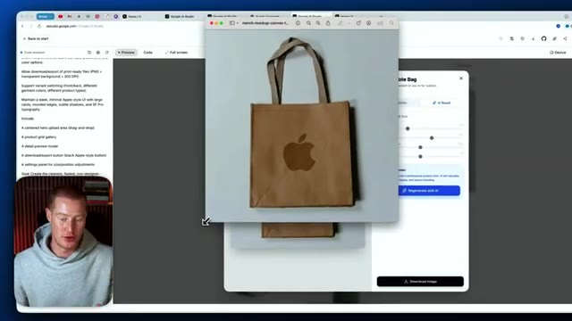
🔍 Agrandir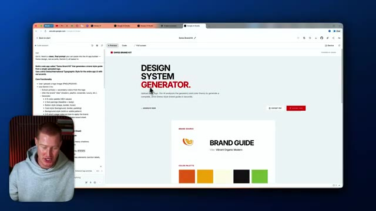
🔍 AgrandirDonc j'ai téléchargé cette image ici qui dit frais. On dirait que c'est un guide de marque orange, orange vif, moderne. Ça montre notre palette de couleurs ici, ça montre même la typographie, ça montre nos libellés de boutons, notre style d'arrière-plan, les notes d'utilisation, la carte de contenu, tout ça ici. Donc nous avons un guide de marque et nous pouvons essentiellement l'exporter sous forme de PDF instantanément et maintenant nous avons ce PDF qui a été généré via notre application dans Gemini. Les gars, c'est fou, honnêtement c'est un cas d'utilisation tellement cool et je pense que le design de cette application a l'air impeccable, ça n'a pas l'air généré par IA, je suis super enthousiaste du résultat et tout ça a été fait à l'intérieur de Google IA.
Interface & Outils : Navigateur web affichant Google AI Studio et une application web de génération de design de marque.
Contenu textuel & Code : Codes de couleur HEX, polices typographiques, composants d'interface utilisateur et notes d'utilisation. [DESC_IMAGE_3] Visualisation et manipulation de la maquette d'un guide de style de marque généré par IA.
Action / Démonstration : Explications face caméra et analyse conceptuelle des marchés.
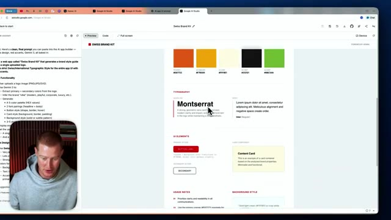
🔍 Agrandir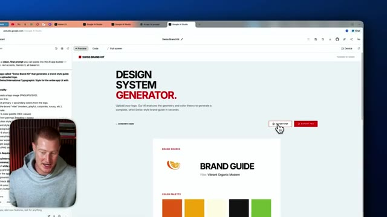
🔍 Agrandir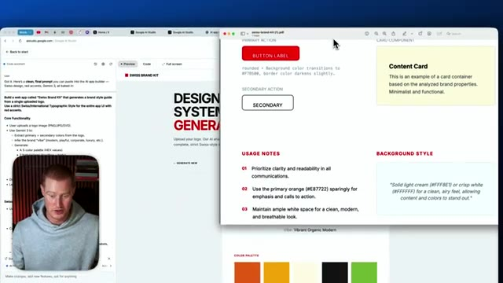
🔍 Agrandirstudio que vous pouvez utiliser dès maintenant gratuitement donc les amis voilà c'est fait voilà Gemini 3 si vous avez tiré un peu de valeur de ceci assurez-vous de vous abonner de laisser un pouce bleu de me faire savoir ce que vous en pensez et bon codage intuitif je suis impatient de voir ce que vous allez construire avec ça
Interface & Outils : Aucune interface technique, graphique ou de trading affichée.
Contenu textuel & Code : Aucun code, indicateur, prompt ou donnée chiffrée visible.
Action / Démonstration : Conclusion de la vidéo et salutations de fin par le présentateur.